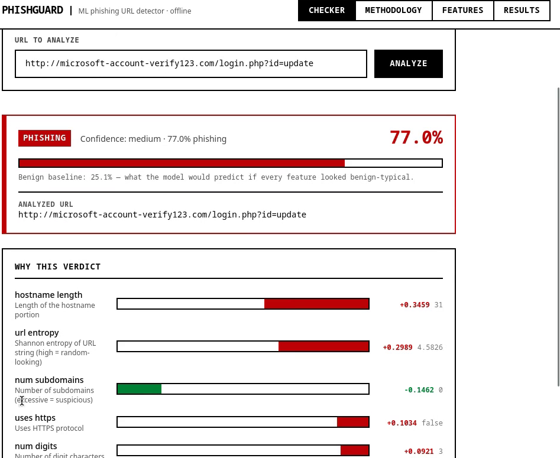
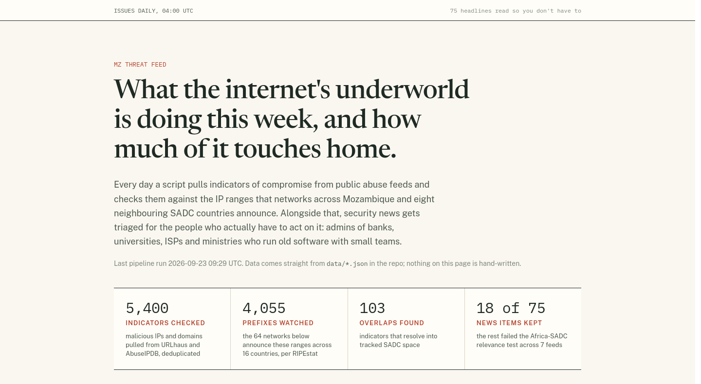

Detection tools, and the number that says whether they work.
I am applying for detection engineering and security engineering roles. Everything below is built the same way: instrument the thing, measure it against ground truth, publish the number even when it is unflattering.
Two projects carry that furthest. nightshift scores detection rules against attacks injected on one machine with the truth written first. PhishGuard decides whether a URL is phishing without sending it anywhere. The research piece further down is a header study of 68 Mozambican sites.
Most detection practice teaches you to install a SIEM and never tells you whether your rules caught anything. This is a single-machine range: it collects journald and auditd telemetry, injects safe loopback-only techniques with the ground truth saved before anything reads it, then scores your rules against that truth.
nightshift score — provider journald
TECH VISIBILITY INJECTED CAUGHT MISSED
T1046 no-telemetry 0 0 0 not scored: no telemetry
T1053.006 observed 1 1 0
T1105 no-telemetry 0 0 0 not scored: no telemetry
T1548.003 observed 0 0 0 not scored: nothing observed
recall 100% (1 caught, 0 missed, 1 scored technique(s))
precision 100% (0 false positive(s))
out of scope, not counted: 2 before the injection window
2026-11-25T16:24:03.360592Z transient-unit-started
2026-11-25T16:24:03.430574Z transient-unit-started
Real output from one run. Techniques the collector cannot see are reported as no telemetry and kept out of the recall arithmetic, so a blind spot never reads as a miss. Scored by the previous version, the same events read precision 33% (2 false positive(s)).
What it taught me. The 33% was my own measurement error, not the rules'. Two systemd-run probes I ran five minutes before the injection were being averaged into an experiment that never observed them. Scoping scoring to the injection window took the same events from 33% to 100% without deleting a single detection — the two still print, outside the arithmetic. Precision was measuring my bookkeeping. And the 100% recall is 1 of 1 scorable technique, which says the plumbing works — not that the rules are good. That needs more injections.
Every other phishing checker uploads the URL you are about to trust to somebody else's server before judging it. This one is logistic regression over 18 features of the URL string, trained on 107,355 URLs, exported to a 2 KB file and run inside the page — no request leaves the browser.

A lookalike login URL at 77% phishing, with the occlusion explanation for each feature. The model file is 2 KB and scores in the page.
What it taught me. ROC-AUC 0.954 is easy to quote and says nothing about the URLs that matter here: the training set is global and English-heavy, so Portuguese-language lures and Mozambican brand names are exactly the case it has seen least.
Threat feeds list indicators and never say which of them sit on address space registered to your own region. This pipeline checks recent IOCs against SADC prefixes verified in RIPEStat, triages regional security news for small IT teams, and publishes both from GitHub Actions every day.

One pipeline run, rendered from the JSON in the repository rather than typed by hand.
What it taught me. Region is the missing column: 103 of 5,400 indicators resolved into SADC space, and no feed marks that — you only find out if you resolve the prefixes yourself.
Plain-language security guides in Portuguese, for readers who have never opened a terminal: home labs, VPNs, everyday tools, privacy.
The header study
Around a hundred sites from government, banking, education and commerce, one HTTPS GET each, six headers scored correct, weak or missing, then chi-square tests across the categories. Written for Research Methodology (RM_2026-ii) at Universidade São Tomás de Moçambique.
Header score, six headers scored correct / weak / missing. 68 Mozambican sites sampled, 40 international ones for comparison; 42 of the 68 failed to complete a handshake from my vantage point, so 66 sites were scored.
Group
Mean score
Mozambique
38.2
Global comparison
52.7
All reachable sites
47.0
68.2% of sites were missing two or more of the six headers. Unreachable hosts are recorded as a result, not dropped from the sample — a site that cannot answer cannot be scored, and it was being left out of the conversation entirely.
What it taught me. The headline was reachability, not configuration: 42 of 68 Mozambican sites failed to complete a handshake from my vantage point — dead DNS, expired certificates, timeouts. From a second network that count could well be lower, which is why it is phrased as a vantage point and not as the state of the sites. Header hygiene is a second-order problem if the site does not answer.
The study is written up as Automated analysis of HTTP security header implementation across Mozambican and global websites, and the scanner is public so it can be pointed at another country. github.com/Flaxo49ja/header-study
How I work
A claim starts as a scan, a count or a score. If something cannot be measured it gets labelled unmeasured instead of guessed at, and the limits go in the report: one host is one vantage point, sudo -n writes nothing to the journal, an unreachable site is a finding, not a gap to be smoothed over.
Simulations are injected with ground truth written before anything reads it, so precision and recall are evidence rather than opinion. In public, that means scans hit public endpoints once, injection targets loopback only, and no repository attacks a system I do not own.
Built the header study for RM_2026-ii, including the sampling method, scoring rubric and hypothesis tests.
Aug – Sep 2026
Published the research and the phishing model
header-study and PhishGuard went public, both with reproducible pipelines and offline test suites.
Oct 2026
Turned the method into tooling
ioc-triage for indicator work, then nightshift to make detection quality measurable instead of assumed.
Nov 2026
Applied it to the region
mz-threat-feed ties indicators to SADC-registered address space; secbasics takes the same findings to non-technical readers.
Hiring me
Open to detection engineering, security engineering and research roles. In Maputo, working remotely, and I would rather spend a week measuring a problem than a month guessing at the fix.